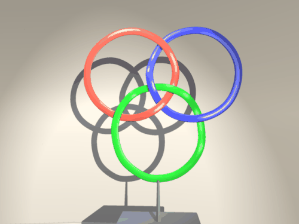
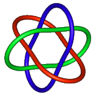
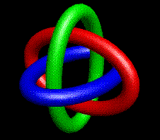

Section 2.3 Borromean Rings
The Borromean rings consists of three interlocking rings, with the property that if any one of them is removed, then all three separate. The name Borromean comes from the Borromeo family of Renaissance Italy, who used them as their family "crest". Below we show the Borromean rings. The shadow, a minimal projection of the rings, is the familiar 3-Venn diagram. By minimal projection of a knot or link onto the plane we simply mean a projection that has the least number of intersections.

Below are two other illustrations of the Borromean rings. The one on the left is not a minimal projection (and isn’t a Venn diagram). On the right is a rendering that has a great deal of symmetry as an object in three dimensional space.


The top diagram is by Toby Orloff and Delle Maxwell, 1990. Copyright by The Geometry Center [GC] , University of Minnesota, used with permission. The left diagram of the second figure is courtesy of Robert Scharein and is from his wonderful KnotPlot Site [KP] .
There is an interesting article on the Borromean rings in the The Mathematical Intelligencer, Winter 1995, Vol 17, No. 1. (Should this go in references?)
There is another interesting historical context in which the rings arise. The diagram was found in picture-stones on Gotland, an island in the Baltic sea off the southeast coast of Sweden. These are dated around the ninth century and are thought to tell tales from the Norse myths. To the Norse people of Scandinavia, a drawing of the Borromean rings using triangles is known as "Odin’s triangle" of the "Walknot" (or "valknut" -- the knot of the slain). The symbol was also carved on the bedposts used in their burials at sea.
For further information, particularly of a mathematical nature, about Borromean rings and their generalizations, see the web page [SJ] of Slavick Jablan.